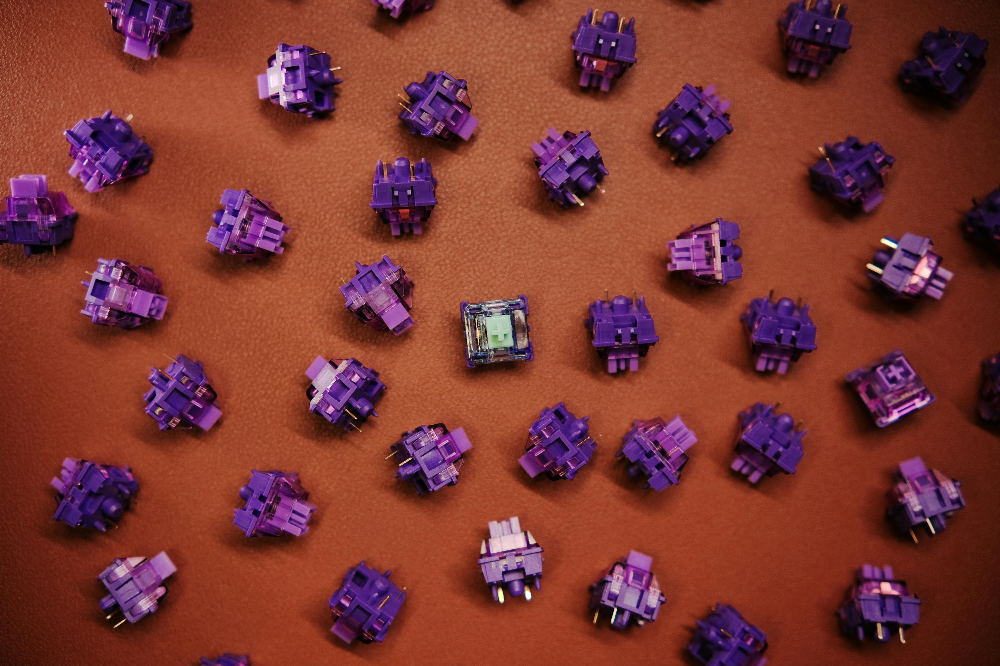
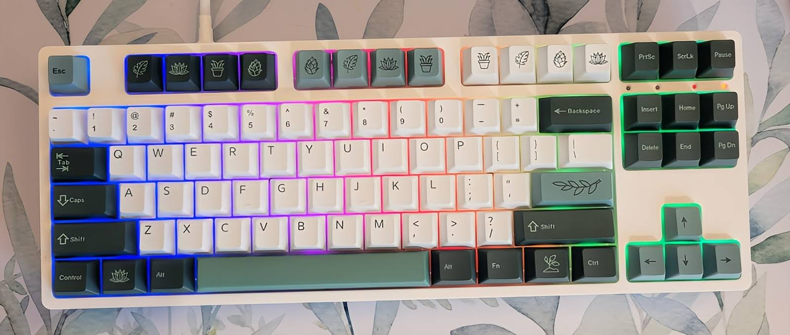

Let's start with the basics!
Structure of a Keyboard
Case
First, there's the case that is the body of the keyboard. It can be made of different materials, most commonly aluminum and plastic because they are inexpensive. If you're building your keyboard from scratch, the case will be the first thing you need to buy since it determines the layout of the keyboard.
The PCB and Plate
Inside the case, there are two parts: The PCB (printed circuit board) and the plate. The PCB connects to your computer, the plate is there to protect it from stray hairs, crumblies, etc.
Plates come in many different materials which affect the sound of the keys as you press them.
Switches
The most intricate part of the keyboard! The switches are what your keycaps are attached to and connect to the PCB to tell your computer what key you're pressing.
There are 3 main types of switches: linear, tactile, & clicky.
Each type of switch as it's own feel and sound. Linear switches don't provide an extra sound or tactile feedback (think laptop keys). Tactile switches have a tactile feedback with each press, and Clicky switches make an extra click when pressed.
Picking a type of switch is totally up to your preference and needs.
Keycaps
Finally, the keycaps! Arguably the most fun part of customizing a keyboard. They come in endless styles and colors. Finding the right keycap profile can make a huge difference in your typing in experience!
Start Small!
It can be really intimidating to get started - that's totally normal! There are so many options out there that building a keyboard from scratch seems like a huge project (not to mention expensive).
So instead of starting at the bottom, try making customizations on a pre-assembled keyboard! Changing out some of the parts on a pre-made can give you a better idea of your preferences before you drop a ton of money on high-end materials. Keycaps are the easiest customization to make and have a big visual impact.
My Build
For my first build, I bought the
Royal Kludge RK87 75% on Amazon. Royal Kludge makes a lot of different sizes of boards and they're easily customizable!
I bought
these keycaps on Amazon as well. They have the classic Cherry profile and are made out of PBT which is more durable than ABS (you can read more about the differences
here).
Lastly, my switches are the
Gazzew Boba U4T. I love that they're tactile and they make a nice low sound when pressed!
